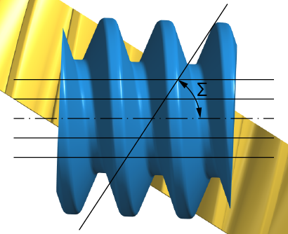

|
|
|


啮合（切片）
在啮合图形中，齿形沿蜗杆轴向以若干个平行切片的形式显示（参见图 23.2）。选择 > 可设置要显示的切片数量以及平行切片之间的距离。中间的啮合切片始终位于蜗杆中部。
此图形仅适用于交错蜗杆副/交错斜齿轮副。
切片数量最多为 21 个。齿形计算中不考虑齿向修形。

图 23.2：啮合图形中切片的位置
Meshing (slices)
In the meshing graphic, the tooth form is shown in several parallel slices in the axial direction of the worm (see Figure 23.2). Select > to set the number of slices to be displayed and the distance between the parallel slices. The middle meshing slice is always in the middle of the worm.
This graphic is only available for crossed worm/crossed helical gear pairs.
The number of slices is limited to 21. Flank line modifications are not taken into account in the tooth form calculation.
Figure 23.2: Position of slices in the meshing graphic